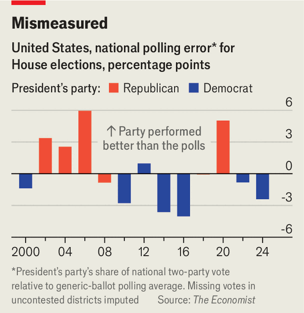

How House Republicans might fend off defeat
A polling error and a few good breaks could be enough
Sep 17th 2026
In the age of Donald Trump, beware of sure things. Democrats are favourites to take back the House of Representatives on November 3rd. Opposition parties have historically done well in midterms, and Mr Trump’s unpopularity, persistent inflation and the Iran war have created a particularly poisonous environment for Republicans. The Economist’s election forecast model rates Democrats’ chances at 92%, and prediction markets are nearly as confident.
Yet events predicted to occur only one time out of ten do nonetheless occur, and Mr Trump and his MAGA faithful have outperformed polls often enough since 2016 to give pause. By what path could Republicans defy the odds and hold the House?

All 435 districts are up for re-election, with Democrats needing a net gain of just three seats to win the chamber. But a burst of gerrymandering has made that harder. Conventionally, states redraw their districts once a decade, after a census, but Mr Trump urged Republican-led states to gerrymander ahead of the midterms.
Despite Democratic countermoves, the president’s push has succeeded, with redistricting adding around eight seats to the Republicans’ total, according to our model. (They would have secured nine, if the Supreme Court had not blocked their proposal for a new map in Missouri on September 10th.) Without this gambit, protecting the House would look nigh-on impossible. “If we hold the House it’s going to be because of the mid-decade redistricting,” says Jason Roe, a strategist working for Tom Barrett, a Republican congressman in a tight race in Michigan. “I didn’t agree with it, but it created a result.”
This rush of redistricting—after decades of gerrymandering and Americans’ habit of moving near like-minded voters—means that just 5-10% of House seats are competitive. A few factors may swing in Republicans’ favour. The first is polling error. When pollsters ask voters which party’s candidate they would support, if the election were held today, Democrats lead by an average of 6.7 points. If a margin that big materialises on election day, Democrats will take the House comfortably. But even assuming no big shift in those numbers by November, a polling error similar to the one in 2020, when the congressional vote for Democrats came in about five points lower than in late generic polls, would make Republicans heavy favourites to win the House.
Factors that are always important—turnout, the quality of candidates and a surge in negative advertising—would then figure even more significantly. Consider the toss-up races in Pennsylvania, a battleground state that broke Democrats’ hearts in 2024. In the swingy 8th House district, in the north-east of the state, Mr Trump won the presidential vote by 8.5 points in 2024. Rob Bresnahan, the Republican who flipped the House seat that year, won by just 1.5 points. Two years earlier, Josh Shapiro, the state’s moderate Democratic governor, won the district by ten points.
What explains this particular electorate’s swings? “I think people vote more for the person than the party,” says Paige Cognetti, the mayor of Scranton, the district’s largest city, who is running to take back Mr Bresnahan’s seat. Ms Cognetti entered politics as an anti-corruption campaigner. On the stump, she points out that Mr Bresnahan made more than 600 stock trades in 2025 and may have profited from inside information. Mr Bresnahan denies wrongdoing. Ms Cognetti sees a link between her message and Mr Trump’s original pitch to “drain the swamp”. She understands “why they have wanted to send somebody to Washington to clean things up”.
At minus 25 points, Mr Trump’s net approval rating is so low, and his insistence on being the election’s main character so loud, that he exerts a heavy drag on vulnerable incumbents like Mr Bresnahan. In Pennsylvania’s closely fought 10th district, Scott Perry, the Republican office-holder, is a member of the right-wing House Freedom Caucus who “can’t hide” from Mr Trump, says Christopher Borick, a political scientist at Lehigh University. “I don’t know that he even wants to hide.” With no alternative, Republicans have bet on mobilising Mr Trump’s still-enthusiastic base, painting Democrats as extremists. It would help if Mr Trump’s broader popularity improves. This is conceivable if, for instance, the war with Iran ends.
A Democratic campaign strategist in Pennsylvania, J.J. Abbott, recalls watching with dismay in 2024 as Mr Trump’s polling in battleground states ticked up steadily as the election neared. “That’s one lesson for Democrats: they should not assume his numbers can’t move in a positive direction,” he says. Republican chances to hold the chamber are at 10% and not 1% for plausible reasons. And Americans have seen Mr Trump’s Houdini act before.■
Stay on top of American politics with The US in brief, our daily newsletter with fast analysis of the most important political news, and Checks and Balance, a weekly note that examines the state of American democracy and the issues that matter to voters.